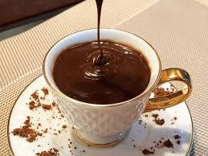

← Receitas Caseiras
Chocolate Quente Cremoso
Uma bebida fácil de fazer, perfeita para dias frios.

Ingredientes (4 porções)
- 2 xícaras (chá) de leite
- 1 colher (sopa) de amido de milho
- 3 colheres (sopa) de chocolate em pó
- 4 colheres (sopa) de açúcar
- 1 canela em pau
- 1 caixinha de creme de leite
Modo de preparo
- Em um liquidificador, bata o leite, o amido de milho, o chocolate em pó e o açúcar.
- Despeje a mistura em uma panela com a canela e leve ao fogo baixo, mexendo sempre até ferver.
- Desligue o fogo, adicione o creme de leite e mexa bem até obter uma mistura homogênea.
- Retire a canela em pau e sirva quente!